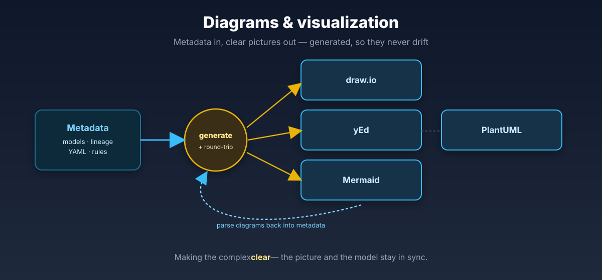

Expertise · Diagram generation
Hand-drawn diagrams go stale the moment the model changes. I treat the diagram as a view of the metadata, not the source of truth — so ERDs, docs and lineage are generated from one model, in any tool, and never drift out of date.

The ideas behind it
The biggest shift: teams stop drawing and start generating. The model lives as metadata; the diagram is just one rendering of it. Change the model, regenerate the picture - it can never lie about what is really there.
PlantUML, Mermaid and friends turn diagrams into text you can diff, review and merge like any other code. No more screenshots that drifted from reality three sprints ago.
I have programmed draw.io, yEd, PlantUML, GraphViz and Mermaid from the same metadata - each via its own format or API. You pick the tool that fits; the model stays the single source.
The same metadata that draws the ERD also generates the documentation - to draw.io, Mermaid, Confluence - so the picture and the prose are always in sync.
From the writing
That is exactly what generating from metadata fixes — let us make your documentation generate itself.
Start a conversation